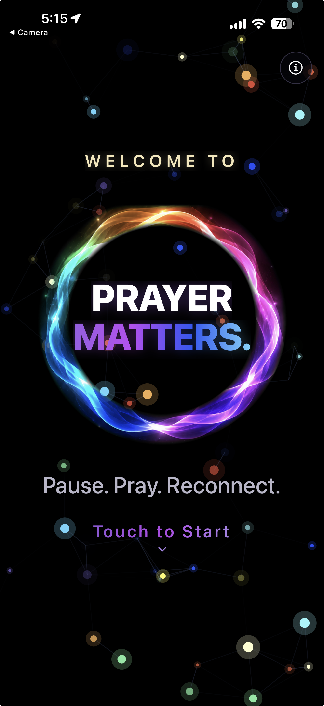
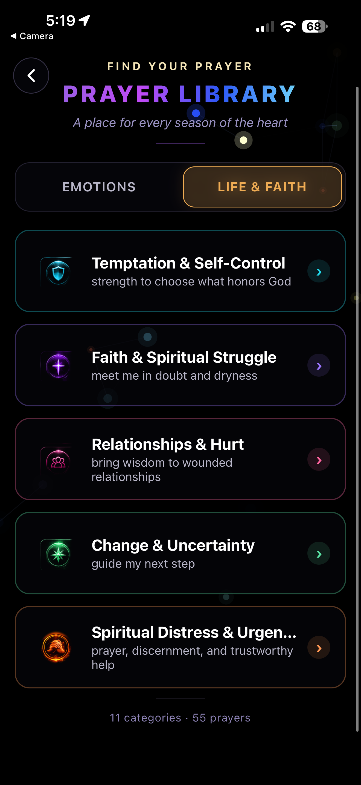
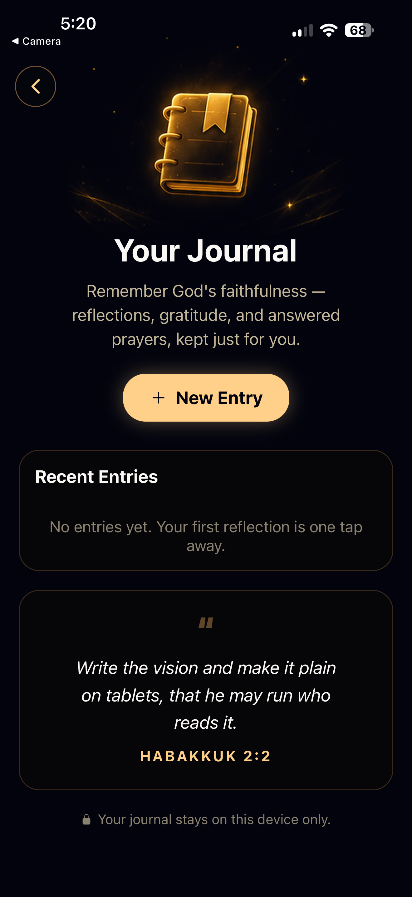
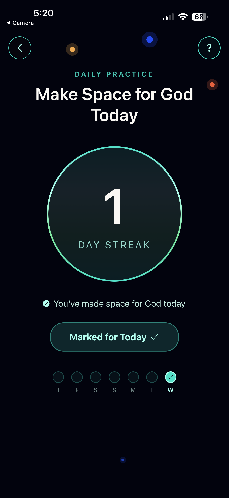

Pause. Pray.
Be Still.
Guided prayer, Scripture, and quiet reflection — right when you need them. A calm place to reconnect with God.
A quiet place to reconnect with God.

See it before you download.



Four quiet spaces, always a tap away.
Choose your space and let the noise settle.
Prayers
Bring what you're carrying. Guided prayers for every season of the heart.
Bible
Read and reflect in a calm, distraction-free reader.
Journal
Remember God's faithfulness — reflections and answered prayers, kept for you.
Walk with God
Draw near with a daily practice that builds a gentle, lasting rhythm.
A prayer for whatever you're carrying.
Browse by how you feel or where you are in faith — from fear and grief to guidance and calling. Every category opens into gentle, Scripture-grounded prayers written to meet you there.
Make space for God, one day at a time.
A gentle streak, never a guilt trip. Mark the day, watch a quiet rhythm form, and let returning feel like coming home — never starting over. Your journal stays private, on your device.
"Be still, and know that I am God."
Psalm 46:10
Pause. Pray. Be Still.
A few quiet minutes is all it takes to begin.
Download on theApp Store